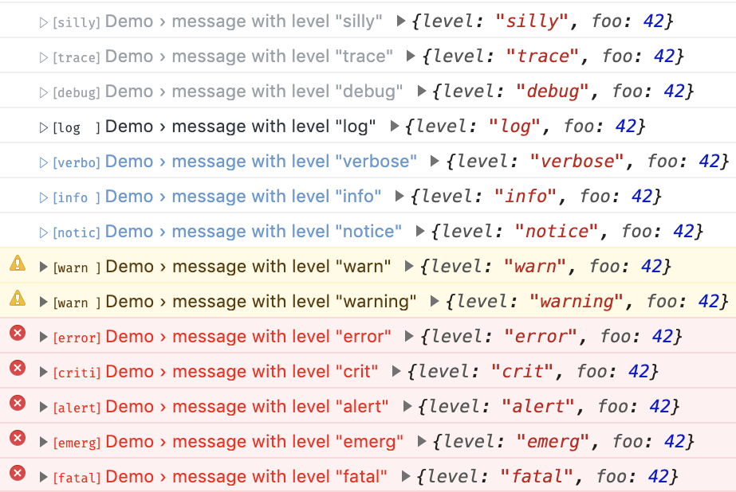
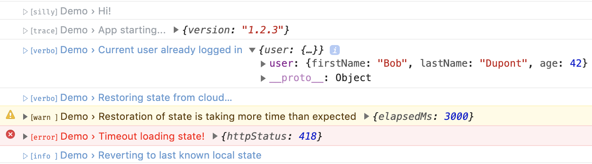
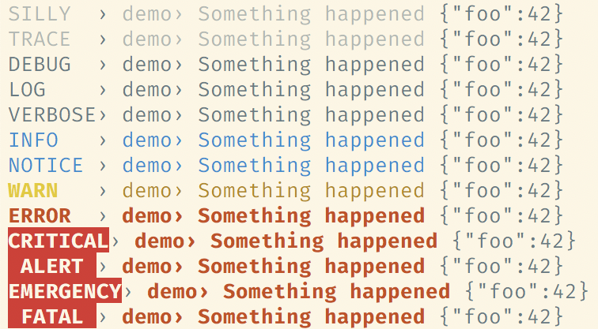
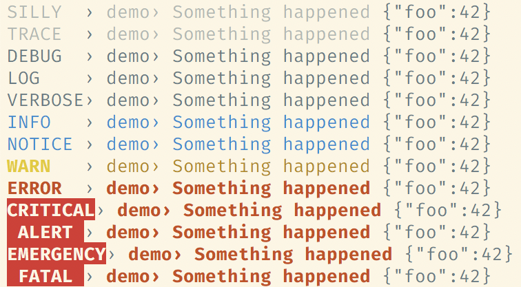

Offirmo’s Practical Logger
Intro
Offirmo's Practical Logger for TypeScript and JavaScript
does only one thing and does it well:
logging locally(*) better than the built-in Console.
myLogger.verbose('Starting app...', { env: 'staging' })
myLogger.warn('Server timeout, will retry...', { timeoutMs: 2000, attemptCount: 3 })
myLogger.trace('entering computeStuff()...')
// myLogger.log('message [string]', { key: 'values (optional)' })
// when logging an error, use the 'err' key in the details
} catch (err) {
myLogger.error('Error processing X', { err })
}
// group API is cool so it's forwarded from Console for convenience
myLogger.group()
myLogger.groupCollapsed()
myLogger.groupEnd()
Log levels: fatal, emerg, alert, crit, error, warn(ing), notice, info, verbose, log, debug, trace, silly
Offirmo's Practical Logger features an isomorphic interface
with node, browser and no-op implementations.
Demo
Live demo: Open the dev tools!
-
All levels...
Levels are compatible with all standard log systems
 -
Basic usage...
Note that levels lower than warn are much more differentiables
 -
Errors...
Correctly displaying errors is a first class feature, even when using lower levels.

-
Groups, lazy and auto-escape...
(Browser only, node is not concerned.)
Without this feature, errors may have been hidden in a collapsed group. Also useless groups with no contents are skipped.
This is configurable, of course.

Screenshots
Firefox screenshot...
Chromium screenshot...
Note how we compensate chromium's buggy "info" display:

Safari screenshot...

IE and others screenshot...
TODOTerminal / Node screenshot (dark)...
Terminal / Node screenshot (light)...
 
 Advocacy
Killer features:
- nicer, more readable display
- Coherent API only 2 params
- TypeScript first
- Isomorphic in an non-bloated way
- Aimed first at logging locally (terminal or devtools) but optionally streamable ex. node server
- Favorably open source (UNLICENSE)
- Many many niceties… (keep reading)
Setup
I strongly suggest using the full Universal debug API which contains this one.
TODO
FAQ
Is that used in production somewhere?
I, the author, am using this lib in production for my pet project.
Is it a drop-in replacement for Console?
No, as this logger is not accepting multiple arguments.
Also, this logger encourages being semantic, keeping the console invocations for quick debugs. This way, you can keep your eslint rules forbidding using console.
What if I incorrectly call it like Console? (with more than 2 arguments)
If you're using TypeScript, it should tell you ✔
If not, the lib will secretly try to handle it in an undocumented way. (undocumented because you shouldn't rely on it) Just be assured that any error object will be correctly detected ✔
I'm writing a server, can I send the logs to a remote stash?
Yes. It's not a primary feature, but this logger took inspiration from bunyan and pino. Two possible solutions:
- If your remote stash is fed from your stdout, you may want to use a sink outputting JSON: https://www.npmjs.com/package/@offirmo/practical-logger-core
- If your remote stash is an API, write your custom sink to intercept logs and send them to the remote location. TODO instructions
Can we have child loggers?
I decided that this feature, while nice, was complicated to get right (should inherit log lovels? details? Dynamically?) and would greatly increase the complexity and bundle size.
IMO a logger should have a "safe" and straightforward behavior, hence simplicity as a feature.
Are there any tradeoffs?
Yes, all solutions have tradeoffs. Here are the most notable one:
- For browsers: You no longer get the call site in the dev tools.
- Slower than Console.x for logged item, but faster for filtered out items
- If you're using this lib directly (not recommended), no built-in mechanism to change the log level at run time. Please use the Universal debug API instead
Contributing
This lib is part of my monorepo, you'll have to build it fully: https://github.com/Offirmo/offirmo-monorepo#contributing
- https://github.com/Offirmo/offirmo-monorepo/tree/master/2-foundation/practical-logger-types
- https://github.com/Offirmo/offirmo-monorepo/tree/master/2-foundation/practical-logger-core
- https://github.com/Offirmo/offirmo-monorepo/tree/master/2-foundation/practical-logger-minimal-noop
- https://github.com/Offirmo/offirmo-monorepo/tree/master/2-foundation/practical-logger-browser
- https://github.com/Offirmo/offirmo-monorepo/tree/master/2-foundation/practical-logger-node